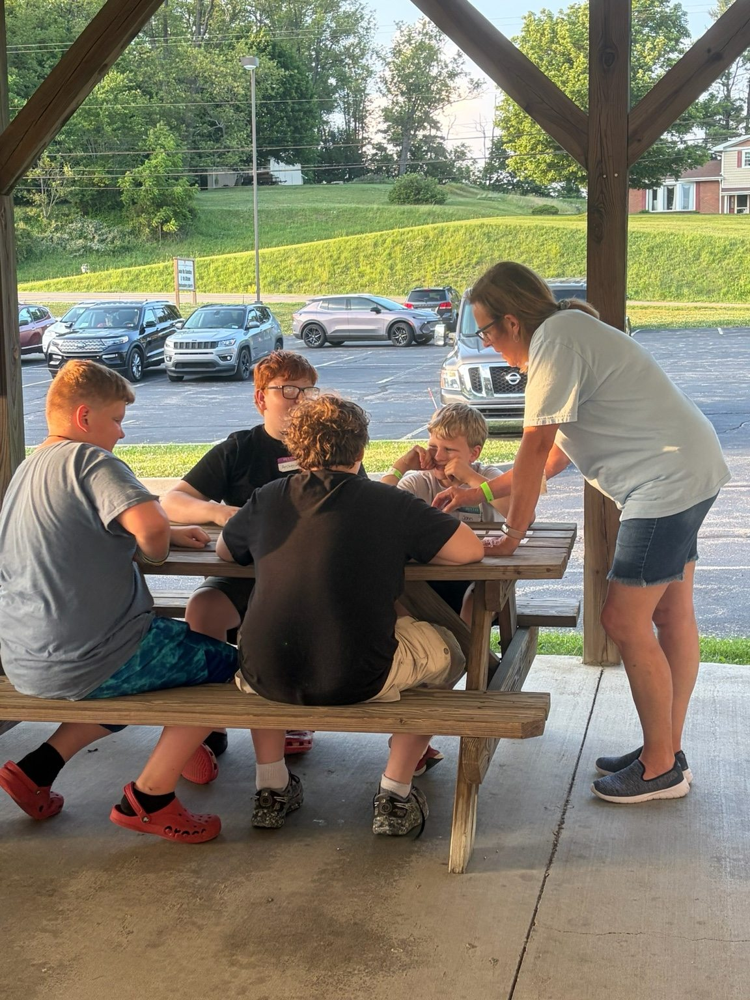

01 / NEXT GENERATION
Kids & Families
A welcoming place for young people to make friends and grow in faith.
Real people. Growing faith. A community where you can come as you are and find where you belong.
You don't have to have it all figured out to feel at home here.
Whether you're new to church, returning after some time away, or looking for a community to grow with, we'd love to meet you. The Foundery is a place to build meaningful friendships, explore faith, and make a difference.
See what Sundays are like ↗
There's no dress code, no pressure, and no expectation that you have everything figured out. Just a warm welcome, worship, and a message that connects faith to everyday life.
Some of the best moments happen when we show up for each other. Find a place to connect, grow, and serve.

A welcoming place for young people to make friends and grow in faith.

From Future Hoopers to community events, there's always room for one more.

Use your gifts, lend a hand, and be part of something bigger than yourself.

Faith is meant to be lived, not just talked about.
Pastor Bobby Westfall helps lead The Foundery with a heart for people, authentic relationships, and a church that makes a difference in the community.
Connect with Our Church ↗We celebrate the moments that remind us why community and faith matter—from a first visit to a new beginning.
Take Your Next Step ↗


Our faith calls us to show up for our neighbors and build relationships beyond our own community. Through partnerships in Liberia, we're learning, listening, and working alongside local leaders toward lasting hope.
Explore 100 Acres of Hope ↗Come see what The Foundery is all about. No pressure. Just people who are glad you're here.
THE FOUNDERY CHURCH
1340 Washington Pike
Wellsburg, West Virginia